전기산업기사 (2007-05-13 기출문제)
1과목: 전기자기학
1. 다음 중 단위체적당 발산 자화력선수를 나타내는 식은?
- ∇× P
- ∇× M
- ∇∙M
- ∇∙P
(정답률: 43%)

2. 자성체가 균일하게 자화되어 있을 때의 자극의 상태로 옳은 것은?
- 자성체에는 자극이 나타나지 않는다.
- 자성체 전체에 자극이 골고루 분포되어 나타난다.
- 자성체의 내부에 자극이 나타난다.
- 자성체의 양단면에 자극이 나타난다.
(정답률: 59%)
3. 두 벡터 A = 2i + 4j, B = 6j - 4k가 이루는 각은 약 몇도 인가?
- 36
- 42
- 50
- 61
(정답률: 69%)
4. 전위계수에 있어서 P11 = P21의 관계가 의미하는 것은?(오류 신고가 접수된 문제입니다. 반드시 정답과 해설을 확인하시기 바랍니다.)
- 도체 1과 도체 2가 멀리 떨어져 있다.
- 도체 1과 도체 2가 가까이 있다.
- 도체 1이 도체 2의 내쪽에 있다.
- 도체 2가 도체 1의 내측에 있다.
(정답률: 60%)
5. 평행판 공기콘덴서 극판간에 비유전율 6일 유리관을 일부만 삽입한 경우 내부로 끌리는 힘은 약 몇 [N/m2] 인가?? (단, 극판간의 전위강도는 30kV/cm 이고 유리판의 두계는 판간 두께와 같다.)
- 199
- 223
- 247
- 259
(정답률: 50%)
6. 전계 E[V/m] 및 자계 H[AT/m]의 전자계가 평면파를 이루고 3× 108m/s의 속도로 전파될 때 단위시간당 단위 면적을 지나는 에너지는 약 [W/m2]인가?
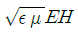
- EH
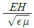
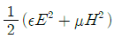
(정답률: 74%)
7. 다음 ( )안에 들어가 내용으로 알맞은 것은?
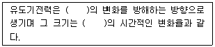
- 전압
- 전류
- 전자파
- 쇄교자속
(정답률: 65%)
8. 전자계에서 전파속도와 관계없는 것은?
- 도전율
- 유전율
- 비투자율
- 주파수
(정답률: 73%)
9. 그림과 같이 반지름 r[m]인 원의 임의의 2점 a, b (각θ)사이에 전류 I[A]가 흐른다. 원의 중심 0의 자계의 세기는 몇 A/m 인가?
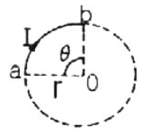
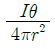
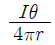
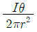
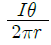
(정답률: 53%)
10. 10V의 기전력을 유기시키기려면 5초간에 몇 [Wb] 의 자속을 끊어야 하는가?
- 2
- 10
- 25
- 50
(정답률: 73%)
11. 두 유전체의 경계면에서 정전계가 만족하는 것은?
- 전계의 법선성분이 같다.
- 전속밀도의 접선성분이 같다.
- 경계면상의 두 점간의 전위차가 같다.
- 전속은 유전률이 작은 유전체로 모인다.
(정답률: 78%)
12. 평행판콘덴서의 극간거리를 1/2 로 줄이면 콘덴서 용량은 처음 값에 비해 어떻게 되는가?
- 1/2 이 된다.
- 1/4 이 된다.
- 2배가 된다.
- 4배가 된다.
(정답률: 84%)
13. 대항면적 S=100cm2의 평행판 콘덴서가 비유전율 2.1, 절연 내력 1.2× 105 V/cm의 기름 중에 있을 때 축적되는 최대 전하는 약 몇 [C] 인가?
- 2.23× 10-6
- 3.14× 10-6
- 4.28× 10-6
- 6.28× 10-6
(정답률: 45%)
14. 한 쪽 지름이 다른 쪽 지름의 6배인 2개의 금속구가 가늘고 긴 전선으로 접속되어 대진되어 있다. 큰 쪽은 작은 쪽보다 몇 배의 정전에너지가 축적되는가?
- 3
- 6
- 18
- 36
(정답률: 51%)
15. 자기 인덕턴스 L1, L2 와 상호인덕턴스 M, 결합계수 k와의 관계는?
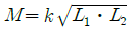
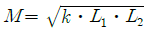
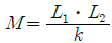
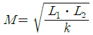
(정답률: 80%)
16. 비유전율 εr = 5 인 유전체내의 1점에서 전계의 세기가 104V/m 라면, 이 점의 분극의 세기는 약 몇 [C/m2]인가?
- 3.5× 10-7
- 4.3× 10-7
- 3.5× 10-11
- 4.3× 10-11
(정답률: 71%)
17. 다음 중 전기력선의 성질로 옳지 않은 것은?
- 전기력선은 정전하에서 시작하여 부전하에서 그친다.
- 전기력선은 도체 내부에만 존재한다.
- 전기력선은 전위가 높은 점에서 낮은 점으로 향한다.
- 단위전하에서는
 개의 전기력선이 출입한다.
개의 전기력선이 출입한다.
(정답률: 78%)
18. 쿨롱의 법칙을 이용한 것이 아닌 것은?
- 정전 고압전압계
- 고압 집진기
- 콘덴서 스피커
- 콘덴서 마이크로폰
(정답률: 55%)
19. 다음 중 강자성체가 아닌것은?
- 철
- 니켈
- 백금
- 코발트
(정답률: 86%)
20. 고립 도체구의 정전용량이 50㎊ 일 때 이 도체구의 반지름은 약 몇 [cm]인가?
- 5
- 25
- 45
- 85
(정답률: 66%)
2과목: 전력공학
21. 압축된 공기를 아크에 불어 넣어서 차단하는 차단기는?
- ABB
- MBB
- VCB
- ACB
(정답률: 54%)
22. 전력선에 의한 통신선로의 전자유도 장해의 발생 요인은 주로 무엇 때문인가?
- 영상전류가 흘러서
- 부하전류가 크므로
- 전력선의 교차가 불충분하여
- 상호 정전용량이 크므로
(정답률: 71%)
23. 부하가 선간전압 3300V, 피상전력 330kVA, 역률 0.7인 3상 부하가 있다. 부하의 역률을 0.85로 개선하는 데 필요한 전력용콘덴서의 용량은 약 몇 [kVA]인가?
- 63
- 73
- 83
- 93
(정답률: 55%)
24. 다음 중 수력발전소의 저수지 용량 등을 결정하는데 사용되는 것으로 가장 적합한 것은?
- 적산 유량곡선
- 수위 유량곡선
- 유황곡선
- 유량도
(정답률: 69%)
25. 화력 발전소의 재열기(reheater)의 목적은?
- 급수를 가열한다.
- 석탄을 건조한다.
- 공기를 예열한다.
- 증기를 가열한다.
(정답률: 70%)
26. 총낙차 300m, 사용수량 20m3/s 인 수력발전소의 발전기 총력을 약 몇 [MW] 인가?(단, 수차 및 발전기효율은 각각 90%, 98%이고 손실 낙차는 총낙차의 6%라 한다
- 49
- 52
- 77
- 87
(정답률: 38%)
27. 이상전압의 발생 우려가 가장 적은 중성점 접지방식은?
- 저항접지방식
- 소호리액터접지방식
- 직접접지방식
- 비접지방식
(정답률: 66%)
28. 수차의 특유속도(specific speed)를 구하는 공식은? (단, 유효낙차 : H[m], 수차의 출력 : P[kW], 수차의 정격회전수 : n[rpm], 득유속도 : Ns[rpm]이라 한다.)
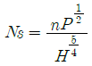
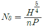
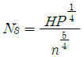
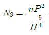
(정답률: 65%)
29. 전력선과 통신선과의 상호인덕턴스에 의하여 발생되는 유도장애는?
- 전력유도장해
- 고조파 유도장해
- 전자유도장해
- 정전유도장애
(정답률: 60%)
30. 3상 3선식 배전선로서 역률이 0.8(지상)인 3상 평형 부하 40[kW]를 연결했을 때 전압 강하는 약 몇 [V]인가? (단, 부하의 전압은 200[V], 전선 1조의 저항은 0.02[Ω]이고 리액턴스는 무시한다.)
- 2
- 3
- 4
- 5
(정답률: 44%)
31. 원자로에서 카드뮴(Cd) 막대가 하는 일을 옳게 설명한 것은?
- 원자로내에 중성자를 공급한다.
- 원자로내에 중성자 운동을 느리게 한다.
- 원자로내의 핵분열을 일으킨다.
- 원자로내에 중성자수를 감소시켜 핵분열의 연쇄반응을 제어한다.
(정답률: 70%)
32. 전송전력이 400MW, 송전거리가 200km인 경우의 경제적인 송전전압은 약 몇 [kV] 인가? (단, still 의 식에 의하여 산정한다.)
- 57
- 173
- 353
- 645
(정답률: 58%)
33. 전력용콘덴서에 직렬로 콘덴서 용량의 5% 정도의 유도리액턴스를 삽입하는 목적은?
- 제3고조파를 제거시키기 위하여
- 제5고조파를 제거시키기 위하여
- 이상전압의 발생을 방지하기 위하여
- 정전용량을 조절하기 위하여
(정답률: 75%)
34. 계통의 기기 절연을 표준화하고 통일된 절연 체계를 구성하는 목적으로 절연계급을 설정하고 있다. 이 절연계급에 해당하는 내용을 무엇이라 부르는가?
- 제한전압
- 기준충격절연강도
- 상용주파 내전압
- 보호계전
(정답률: 58%)
35. 정사각형으로 배치된 4도체 송전선이 있다. 소도체의 반지름이 1cm 이고, 한변의 길이가 32cm일 때, 소도체간의 기하학적 평균거리는 몇 [cm] 인가?
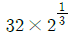
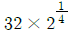
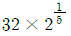
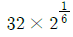
(정답률: 56%)
36. 송전계통의 안정도 증진방법에 대한 설명으로 옳지 않은 것은?
- 고장시 발전기 입∙출력을 불평형을 작게 한다.
- 전압변동을 작게한다.
- 고장전류를 줄이고 고정구간을 신속하게 차단한다.
- 직렬리액턴스를 크게 한다.
(정답률: 78%)
37. 5700kcal/kg의 석탄을 150ton 소비해서 200000kWh를 발전하였을 때, 발전소의 효율은 약 몇 % 인가?
- 12
- 16
- 20
- 24
(정답률: 44%)
38. 고압 배전선로의 선간전압을 3300V에서 5700V로 승압하는 경우, 같은 전선으로 전력손실을 같게 한다면 약 몇 배의 전력을 공급할 수 있는가?
- 1.5
- 2
- 3
- 4
(정답률: 57%)
39. PWR(Pressurized Water Reactor)형 발전용 원자로에서 감속재, 냉각재 및 반사체로서의 구실을 겸하여 주로 사용되고 있는 것은?
- 경수(H2O)
- 중수(D2O)
- 흑연
- 액체금속(Na)
(정답률: 54%)
40. 송전선로의 코로나 손실을 나타내는 Peek 식에서 E0 에 해당하는 것은? (단, Peek 식
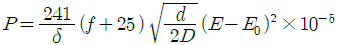
[kW/km/선]이다)- 코로나 임계전압
- 전선에 걸리는 대지전압
- 송전단 전압
- 기준충격 절연강도 전압
(정답률: 62%)
3과목: 전기기기
41. 단상변압기의 병렬운전 조건에 필요하지 않은 것은?
- 극성이 일치할 것
- 출력이 반드시 같을 것
- 권수비가 같을 것
- 각 변압기의 백분율 임피던스 강하가 같을 것
(정답률: 63%)
42. 다음 중 3상 동기기의 제동권선의 역할은?
- 출력증가
- 효율증가
- 난조방지
- 역률개선
(정답률: 76%)
43. 임피던스 강하가 5%인 변압기가 운전중 단락되었을 때 그 단락 전류는 정격전류의 몇 배인가?
- 20
- 125
- 30
- 35
(정답률: 73%)
44. 1000V의 단상 교류를 전파 정류해서 150A의 직류를 얻는 정류기의 교류촉 전류는 약 몇 A 인가?
- 106
- 116
- 125
- 166
(정답률: 48%)
45. 지름 0.2m, 속도 1800rpm 인 전기자의 주변 속도는 약 몇 m/sec 인가?
- 18.84
- 12.56
- 10.42
- 6.28
(정답률: 69%)
46. 다음 중 1방향성 4단자 사이리스터는 어느 것인가?
- TRIAC
- SCS
- SCH
- SSS
(정답률: 63%)
47. 6극 직류발전기의 정류자 편수가 132, 단자전압이 220V, 직렬 도체수가 132개이고 중권이다. 정류자 편간 전압은 몇 V 인가?
- 10
- 20
- 30
- 40
(정답률: 56%)
48. 어떤 변압기의 전부하 동선이 240W, 철선이 120W일 때, 이 변압기를 최고 효율로 운전하는 출력은 정격 출력의 약 몇 %가 되는가?(오류 신고가 접수된 문제입니다. 반드시 정답과 해설을 확인하시기 바랍니다.)
- 66.7
- 44.4
- 33.3
- 22.5
(정답률: 60%)
49. 회전 변류기의 직류측의 전압을 변경하려면 슬립링에 가해지는 교류측 전압을 변화시킨다. 그 방법이 아닌 것은?
- 직렬리액턴스에 의한 방법
- 유도전압조정기에 의한 방법
- 분류저항 삽입에 의한 방법
- 부하시 전압조정 변압기에 의한 방법
(정답률: 49%)
50. 3상유도 전동기의 원선도 작성에 필요한 기본량을 구하기 위한 시험이 아닌 것은?
- 충격전압시험
- 저항측정시험
- 무부하시험
- 구속시험
(정답률: 57%)
51. 출력 4kW, 1400rpm인 전동기의 토크는 약 몇 kg∙m 인가?
- 2.79
- 3.26
- 4.79
- 5.91
(정답률: 64%)
52. 권선형 유도 전동기의 기동시 2차 저항을 넣는 이유는?
- 기동 전류 증대
- 회전수 감소
- 기동 토크 감소
- 기동 전류 감소와 토크 증대
(정답률: 62%)
53. 단상 변압기에서 전부하시 2차 전압은 115V이고, 전압변동률은 2%이다. 1차 단자 전압은 몇 V인가? (단, 1차, 2차 권선비는 20 : 1 이다)
- 2326
- 2336
- 2346
- 2356
(정답률: 65%)
54. 동기기의 전기자 권선법이 아닌 것은?
- 중권
- 2층권
- 분포권
- 전절권
(정답률: 56%)
55. 3상 권선형 유도 전동기의 회전자에 슬립 주파수의 전압을 공급하여 속도를 변화시키는 방법은?
- 교류 여자 제어법
- 1차 저항법
- 주파수 변환법
- 2차 여자 제어법
(정답률: 61%)
56. 어떤 직류 전동기의 유기전력이 200V, 매분 회전수가 1200rpm으로 토크 16.2kg∙m를 발생하고 있을 때의 전류는 약 몇 A 인가?
- 60
- 80
- 100
- 120
(정답률: 54%)
57. 그림은 3상 동기 발전기의 무부하 포화곡선이다. 이 발전기의 포화율은 얼마인가?
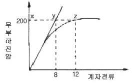
- 0.5
- 0.67
- 0.8
- 0.9
(정답률: 44%)
58. 4극 7.5kW, 200V, 60Hz인 3상 유도전동기가 있다. 진부하에서의 2차 입력이 7950W이다. 이 경우의 2차 효율은 약 몇 %인가? (단, 여기서 기계손은 130W 이다.)
- 92
- 94
- 96
- 98
(정답률: 61%)
59. 발전기의 단락비나 동기 임피던스를 산출하는데 필요한 시험은?
- 무부하 포화 시험과 3상 단락시험
- 정상, 영상 리액턴스의 측정시험
- 돌발 단락 시험과 부하시험
- 단상 단락 시험과 3상 단락시험
(정답률: 73%)
60. 브러시를 이동하여 회전속도를 제어하는 전동기는?
- 단상 직권전동기
- 직류 직권전동기
- 반발 전동기
- 반발기동형 단상유도전동기
(정답률: 52%)
4과목: 회로이론
61. 그림 ab간에 40V의 전압을 가할 때 10A의 전류가 흐른다. r1 및 r2 에 흐르는 전류비를 1:2로 하려면 r1 및 r2의 저항 [Ω]은 각각 얼마인가?
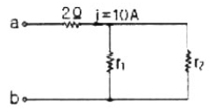
- r1 = 6, r2 = 3
- r1 = 3, r2 = 6
- r1 = 4, r2 = 2
- r1 = 2, r2 = 4
(정답률: 62%)
62. R-L-C 직렬회로에서 L = 0.1× 103 [H], R = 100[Ω], C = 0.1× 106[F] 일 때 이 회로는?
- 비진동적이다.
- 진동적이다.
- 정현파로 진동한다.
- 진동과 비진동을 반복한다.
(정답률: 62%)
63. 2개 교류 전압
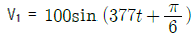
[V]와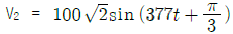
[V]가 있다. 옳게 표시된 것은?- V1과 V2 의 주기는 모두 1/60[sec]이다.
- V1과 V2 의 주파수는 377[Hz]이다.
- V1과 V2 의 동상이다.
- V1과 V2 의 실효값은 100[V],
 [V] 이다.
[V] 이다.
(정답률: 60%)
64. 그림과 같은 피드백 회로의 전달함수는?
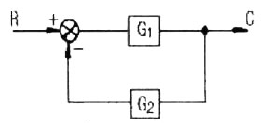
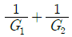
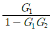
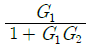
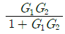
(정답률: 59%)
65.
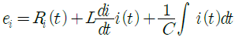
에서 모든 초기조건을 0으로 하고 라플라스 변환하면 어떻게 되는가?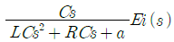
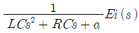
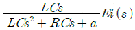
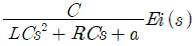
(정답률: 52%)
66. 어느 3상 회로의 선간전압을 측정하니 Va=120[V], Vn=- 60 - 180[V], Vc = -60 +j80[V]이었다. 불평형률 [%]은?(오류 신고가 접수된 문제입니다. 반드시 정답과 해설을 확인하시기 바랍니다.)
- 13
- 27
- 34
- 41
(정답률: 28%)
67. 정현파 교류의 실효값을 구하는 식이 잘못된 것은?
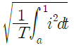
- 파고율×평균치
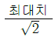
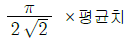
(정답률: 62%)
68. 주기적인 구형파 신호의 성분은 어떻게 되는가?
- 성분 분석이 가능하다.
- 직류분만으로 합성된다.
- 무수히 많은 주파수의 합성이다.
- 교류 합성을 갖지 않는다.
(정답률: 72%)
69.
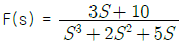
일 때 f(t)의 최종값은?- 0
- 1
- 2
- 3
(정답률: 67%)
70. R-C 직렬회로의 시정수는 RC 이다. 시정수의 단위는 어떻게 되는가?
- Ω
- Ω㎌
- sec
- Ω/F
(정답률: 65%)
71. 다음 중 테브난의 정리와 쌍대의 관계가 있는 것은?
- 밀만의 정리
- 중첩의 원리
- 노튼의 정리
- 보싱의 정리
(정답률: 58%)
72. 회로에서 단자 1-1에서 본 구동점 임피던스 Z11은 몇 Ω인가?
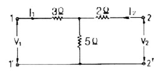
- 5
- 8
- 10
- 15
(정답률: 69%)
73. 이상적인 변압기로 구성된 4단자 회로에서 정수 D 를 구하면?
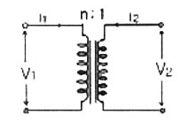
- 1
- 0
- n
- 1/n
(정답률: 55%)
74. 회로방정식의 특성근과 회로의 시정수에 대하여 바르게 서술된 것은?
- 특성근과 시정수는 같다.
- 특성근의 역(逆)과 회로의 시정수는 같다.
- 특성근의 절대값의 역과 회로의 시정수는 같다.
- 특성근과 회로의 시정수는 서로 상관되지 않는다.
(정답률: 53%)
75. 전원과 부하가 다 같이 △결선된 3상 평형 회로가 있다. 전원 전압이 200V, 부하 임피던스가 6＋j8Ω 인 경우 선전류는 몇 A 인가?
- 20
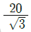
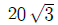
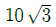
(정답률: 69%)
76. 불평형 3상전류 Ia = 10＋j2[A], Ib = -20 – j24[A], IC= -5 ＋j10[A] 일 때의 영상전류 I0의 값은 얼마인가?
- 15 ＋ j2[A]
- -5 - j4[A]
- -15 - j2[A]
- -45 - j36[A]
(정답률: 63%)
77. 그림의 사다리꼴 회로에서 출력전압 VL은 몇 V 인가?
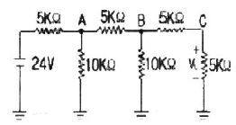
- 2
- 3
- 4
- 6
(정답률: 43%)
78. 비사인파의 실효값은 어떻게 되는가?
- 각 고조파의 실효값의 합
- 각 고조파와 실효값 제곱의 합의 제곱근
- 기본파와 3고조파 성분의 합
- 각 고조파와 실효값의 합의 평균
(정답률: 62%)
79. R = 10Ω, L = 0.045H의 직렬 회로에 실효값 140V, 주파수 25Hz의 정현파 교류전압을 가했을 때 임피던스[Ω]의 크기는 얼마인가?
- 17.25
- 15.31
- 12.25
- 10.41
(정답률: 55%)
80. 파고율의 관계식이 바르게 표시된 것은?
- 최대값/실효값
- 실효값/최대값
- 평균값/실효값
- 실효값/평균값
(정답률: 70%)
5과목: 전기설비기술기준 및 판단 기준
81. 전개된 건조한 장소에서 400V 이상의 저압 옥내배선을 할 때 특별한 경우를 제외하고는 시행할 수 없는 공사는?
- 애자사용공사
- 금속덕트공사
- 버스덕트공사
- 합성수지몰드공사
(정답률: 35%)
82. 터널 등에 시설하는 고압배선이 그 터널 등에 시설하는 다른 고압배선, 저압배선, 약전류전선 등 또는 수관∙가스관이나 이와 유사한 것과 접근하거나 교차하는 경우에는 몇 [cm] 이상 이격하여야 하는가?
- 10
- 15
- 20
- 25
(정답률: 43%)
83. 고압이상의 전압조정기의 내장권선(內臟券線)을 이상전압으로부터 보호하기 위하여 특히 필요한 경우에는 그 권선에 제 몇 종 접지공사를 하여야 하는가?(관련 규정 개정전 문제로 여기서는 기존 정답인 1번을 누르면 정답 처리됩니다. 자세한 내용은 해설을 참고하세요.)
- 제1종 접지공사
- 제2종 접지공사
- 제3종 접지공사
- 특별 제3종 접지공사
(정답률: 48%)
84. 가로등, 경기장, 공장, 아파트 단지 등의 일반 조명을 위하여 시설하는 고압방전등은 그 효율이 몇 [lm/W] 이상의 것이어야 하는가?
- 30
- 50
- 70
- 100
(정답률: 63%)
85. 금속관공사를 콘크리트에 매설하여 시행하는 경우 관의 두께는 몇 [mm] 이상이어야 하는가?
- 1.0
- 1.2
- 1.4
- 1.6
(정답률: 64%)
86. 저압 옥내간선은 특별한 경우를 제외하고 다음 중 어느 것에 의하여 그 굵기가 결정되는가?
- 변압기 용량
- 전기방식
- 부하의 종류
- 허용전류
(정답률: 64%)
87. 농사용 저압 가공 전선로의 경간은 몇 [m] 이하이어야 하는가?
- 30
- 50
- 60
- 100
(정답률: 54%)
88. 전기온상의 발열선의 온도는 몇 [°C]를 넘지 아니하도록 시설하여야 하는가?
- 70
- 80
- 90
- 100
(정답률: 60%)
89. 특별고압 가공전선이 삭도와 제2차 접근 상태로 시설할 경우에 특별고압 가공전선로는 어느 보안공사를 하여야 하는가?(관련 규정 개정전 문제로 여기서는 기존 정답인 3번을 누르면 정답 처리됩니다. 자세한 내용은 해설을 참고하세요.)
- 고압 보안공사
- 제1종 특별고압 보안공사
- 제2종 특별고압 보안공사
- 제3종 특별고압 보안공사
(정답률: 67%)
90. 수상 전선로를 시설하는 경우 알맞은 것은?
- 사용전압이 고압인 경우에는 제3종 캡타이어 케이블을 사용한다.
- 가공 전선로의 전선과 접속하는 경우, 접속점이 육상에 있는 경우에는 지표상 4m 이상의 높이로 지지물에 견고하게 붙인다.
- 가공 전선로의 전선과 접속하는 경우, 접속점이 수면상에 있는 경우, 사용전압이 고압인 경우에는 수면상 5m 이상의 높으로 지지물에 견고하게 붙인다.
- 고압 수상 전선로에 지락이 생기 때에 대비하여 전로를 수동으로 차단하는 장치를 시설한다.
(정답률: 51%)
91. 특별고압전선로에 접속하는 배전용 변압기의 1차 전압은 몇 [V] 이하이어야 하는가?
- 20000
- 25000
- 30000
- 35000
(정답률: 41%)
92. 전력보안 가공통신선을 도로 위 철도 또는 궤도, 횡단보도교 위 등이 아닌 일반적인 장소에 시설하는 경우에는 지표상 몇 [m] 이상으로 시설하여야 하는가?
- 3.5
- 4
- 4.5
- 5
(정답률: 34%)
93. 일반주택 및 아파트 각 호실의 현관 등에 조명용 백열전등을 설치할 때, 몇 분이내에 소등되는 타임스위치를 시설하여야 하는가?
- 1
- 2
- 3
- 5
(정답률: 67%)
94. 3kV의 고압옥내배선을 케이블공사로 설계하는 경우 사용할 수 없는 케이블은?
- 연피케이블
- 비닐외장케이블
- MI 케이블
- 클로로프렌외장케이블
(정답률: 40%)
95. 특별고압 가공 전선로의 유도전류는 사용전압이 60000V 이하인 경우에는 전화선로의 길이 12km마다 몇 [㎂]를 넘지 아니하도록 시설하여야 하는가?
- 1.5
- 2
- 2.5
- 5
(정답률: 59%)
96. 시가지에 시설되어 있는 가공 직류 전차선의 장선에는 가공 직류 전치선간 및 가공 직류 전치선으로부터 60cm이내의 부분 이외에 접지공사르 할 때, 제 몇 종 접지공사를 하여야 하는가?(관련 규정 개정전 문제로 여기서는 기존 정답인 3번을 누르면 정답 처리됩니다. 자세한 내용은 해설을 참고하세요.)
- 제1종 접지공사
- 제2종 접지공사
- 제3종 접지공사
- 특별 제3종 접지공사
(정답률: 48%)
97. 인가가 많이 연접되어 있는 장소에 시설하는 가공전선로의 구성재에 병종풍압하중을 적용할 수 없는 경우는?
- 저압 또는 고압 가공전선로의 지지물
- 저압 또는 고압 가공전선로의 가섭선
- 사용전압이 35000V 이하의 특별고압 절연전선 또는 케이블을 사용하는 특별고압 가공전선로의 지지물
- 사용전압이 35000V 이상인 특별고압 가공전선로에 사용하는 케이블 및 조가용선
(정답률: 51%)
98. 저압가공전선과 고압가공전선을 동일 지지물에 시설하는 경우 저압가공전선과 고압가공전선과의 이격거리는 몇[cm] 이상이어야 하는가?
- 40
- 50
- 60
- 70
(정답률: 40%)
99. 제1종 또는 제2종 접지공사에 사용하는 접지선을 사람이 접촉할 우려가 있는 곳에 시설하는 경우에 그 접지선의 어느 부분까지 합성수지관 또는 이와 동등 이상의 절연효력 및 강도를 가지는 몰드로 덮어야 하는가?
- 지하 50cm 로부터 지표상 1.6m 까지의 부분
- 지하 60cm 로부터 지표상 2m 까지의 부분
- 지하 75cm 로부터 지표상 2m 까지의 부분
- 지하 80cm 로부터 지표상 1.8m 까지의 부분
(정답률: 73%)
100. 조상기의 보호장치로서 내부 고장시에 자동적으로 전로로부터 차단하는 장치를 하여야 하는 조상기 용량은 몇 [kVA] 이상인가?
- 5000
- 7500
- 10000
- 15000
(정답률: 52%)
발산 자화력은 자기장이 얼마나 "발산"되는지를 나타내는 값입니다. 이는 자기장의 회전과 관련이 있습니다. 따라서, 발산 자화력은 자기장의 회전에 의해 발생하는 것입니다.
발산 자화력은 단위체적당 발산 자화력으로 나타낼 수 있습니다. 이는 단위 체적 내에서 발산되는 자화력의 크기를 의미합니다.
따라서, 발산 자화력선수를 나타내는 식은 ∇∙M입니다. 이는 자기장의 회전에 의해 발산되는 자화력의 크기를 나타내는 식입니다.